# 데이터를 다루는 'dplyr' 패키지 실행
library(dplyr)
# 엑셀 파일을 읽어오는 'readxl' 패키지 실행
library(readxl)
# 그래프를 그리는 'ggplot2' 패키지 실행
library(ggplot2)스포츠과학원 재직자교육 - R을 활용한 데이터 분석
패키지 로드 및 데이터 불러오기
패키지 불러오기 (library())
앞서 install.packages()를 통해 패키지를 설치한 것은 스마트폰에 앱을 ’다운로드’한 것과 같다. 앱을 사용하려면 아이콘을 눌러서 실행해야 하듯이, R에서도 설치된 패키지를 사용하려면 이 패키지를 사용 할 것이라 선언해 주는 과정이 필요하다.
이때 사용하는 함수가 library()이다,
설치: 컴퓨터에 한 번만 하면 됨. (인터넷 필요)
실행: RStudio를 켤 때마다, 해당 기능을 쓰기 위해 매번 실행해야 함. (오프라인 가능)
현재 내 RStudio에 어떤 패키지들이 로드되어(활성화되어) 있는지 확인하려면 search() 함수를 사용한다.
search()[1] ".GlobalEnv" "package:stats" "package:graphics"
[4] "package:grDevices" "package:utils" "package:datasets"
[7] "package:methods" "Autoloads" "package:base"
주의사항
R의 패키지들은 전 세계 사용자들이 자발적으로 만든 것이므로 아주 드물게 오류가 있을 수 있다는 점을 항상 염두에 두어야 한다.
외부 데이터 불러오기
R에서 데이터를 직접 타이핑해서 입력하는 경우는 거의 없다. 대부분 엑셀이나 회사 시스템에서 내려받은 파일을 R로 가져와서 분석하게 된다. 가장 많이 사용하는 두 가지 파일 형식인 .csv와 .xlsx(엑셀) 파일을 불러오는 방법을 알아보자.
CSV 파일 불러오기
가장 흔하게 접하게 될 파일 형식은
.csv이이다. CSV는 Comma Separated Values의 약자로, 겉보기엔 엑셀 파일 같지만 실제로는 데이터들이 쉼표(,)로 구분된 단순한 텍스트 파일이이다. 용량이 가볍고 호환성이 좋아 데이터 분석에서 가장 선호하는 형식이다.R에서 CSV 파일을 불러올 때는
read.csv()함수를 사용한다.
파일 경로 지정 팁
윈도우 탐색기에서 파일 경로를 복사하면 C:\Users\Data 처럼 역슬래시(\)로 되어 있다. R에서는 이를 인식하지 못하므로, 반드시 슬래시(/) 두 개(\\)로 바꿔주어야 한다.
- (X)
"C:\Users\Data\file.csv" - (O)
"C:/Users/Data/file.csv
# 파일 경로를 큰따옴표("") 안에 넣어주세요.
read.csv("C:/Users/Data/my_data.csv")한글이 깨져서 보일 때 (인코딩 문제)
한국인 사용자에게 가장 골치 아픈 문제이다. 파일을 불러왔는데
ꍪꍫ같은 외계어가 나온다면 인코딩(Encoding) 방식이 맞지 않아서이다. 이럴 때는fileEncoding옵션을 추가한다.CP949: 보통 윈도우 환경에서 만든 파일일 때
UTF-8: 맥(Mac)이나 웹, 최신 시스템에서 만든 파일일 때
# 윈도우 엑셀로 저장한 CSV라면 보통 CP949입니다.
read.csv("파일경로/파일명.csv", fileEncoding = "CP949")
# 그래도 깨진다면 UTF-8을 시도해보세요.
read.csv("파일경로/파일명.csv", fileEncoding = "UTF-8")첫 번째 줄이 제목일 때 (Header)
데이터 파일의 첫 번째 줄(행)이 변수명(칼럼명)인 경우가 많다.
read.csv는 기본적으로 첫 줄을 제목으로 인식하지만(header = TRUE), 만약 첫 줄부터 바로 데이터가 시작된다면header = FALSE옵션을 주어야 한다.엑셀 파일(.xlsx) 불러오기
순수 엑셀 파일(
.xls,.xlsx)을 불러올 때는 R의 기본 기능으로는 안 되고,readxl이라는 패키지의 힘을 빌려야 한다. (위에서library(readxl)을 했는지 꼭 확인!).xls파일 (구버전 엑셀):read_xls()함수 사용.xlsx파일 (신버전 엑셀):read_xlsx()함수 사용
엑셀 파일은 여러 개의 시트(Sheet) 로 구성된 경우가 많다. 특정 시트의 데이터만 가져오고 싶다면
sheet옵션에 번호나 시트 이름을 적어주면 된다.
# 엑셀 파일 불러오기
read_xlsx("C:/Users/Data/sales_data.xlsx")
# 두 번째 시트에 있는 데이터만 가져오고 싶을 때
read_xlsx("C:/Users/Data/sales_data.xlsx", sheet = 2)1. R의 기초
1.1 연산
1.1.1 기초 연산
R은 사칙연산(덧셈, 뺄셈, 곱셈, 나눗셈)에 대한 기본적인 기능을 제공한다.
특히 곱셈 기호는 문자 x가 아니라 연산자 *를 사용한다는 점에 주의하자.
1 + 21 - 22 * 22 / 21.1.2 비교 연산
R에서는 부등호와 등호를 이용한 비교 연산이 가능하다.
비교 연산자는 조건문, 필터링, 논리 판단 등에 자주 사용된다.
비교 연산을 수행하면 결과로 TRUE 또는 FALSE가 출력된다.
3 > 2 # TRUE
5 == 10 # FALSE
4 != 4 # FALSE
7 <= 9 # TRUE1.2 변수
1.2.1 변수 할당
R에서 변수를 생성(할당)하는 방법은 여러 가지가 있지만, 그 중 <- 또는 = 연산자가 가장 자주 사용된다.
x라는 변수에 2를, y라는 변수에 5를 저장해보자:
x <- 2
y = 51.2.2 변수 이름 규칙
R에서 변수 이름을 정할 때는 다음과 같은 규칙이 적용된다:
- 변수 이름은 반드시 영문자 또는 마침표(
.), 밑줄(_)로 시작해야 한다. 숫자로 시작할 수는 없다. - 변수 이름에는 영문자, 숫자, 마침표(
.), 밑줄(_)만 사용할 수 있다. - 공백(띄어쓰기)이나 특수문자(예:
@,!,-등)는 사용할 수 없다. - 대소문자를 구분한다. (
score와Score는 다른 변수로 인식됨) R의 예약어(예:if,for,TRUE,function등)는 변수 이름으로 사용할 수 없다.
1.2.3 변수 제거
변수를 제거하려면 rm() 함수를 사용한다.
삭제하고자 하는 변수명을 rm() 함수 안에 넣어주면 해당 변수가 메모리에서 제거된다.
ls(): 현재 작업 환경에 저장되어 있는 변수들의 이름을 나열해준다.rm(): 변수를 삭제한다. 삭제하려는 변수의 이름을rm()함수 안에 넣어 실행하면 된다. 예:rm(x)는 변수x를 삭제한다.
x <- 10
ls()
rm(x) # 변수 x 제거1.3 데이터타입
R에서 사용되는 데이터 타입은 매우 다양하지만, 그중에서도 네 가지 주요 데이터 타입이 자주 사용된다:
numeric, character, logical, Date/POSIXct
이번 교육에서는 이 중에서 numeric, character, logical 세 가지 타입을 중심으로 다루도록 하겠다.
1.3.1 numeric 자료
R은 대다수의 자료가 숫자형태로 존재하게 된다. numeric 자료는 정수, 실수를 다루며 어떤 변수가 numeric인지 확인하는 함수는 is.numeric()을 통해 이루어진다.
R에서는 대부분의 데이터가 숫자 형태로 표현되며, 이러한 데이터를 numeric 타입이라고 한다.
numeric 자료형은 정수(integer)와 실수(double)를 모두 포함한다.
어떤 변수가 numeric 타입인지 확인하려면 is.numeric() 함수를 사용한다.
x <- 3.14
is.numeric(x) # TRUE정수를 생성하고 싶은 경우, 숫자 뒤에 L을 붙이면 해당 변수를 정수(integer)로 생성할 수 있다.
x <- 10L
is.integer(x) # TRUE
is.numeric(x) # TRUE (정수도 numeric의 하위 개념)어떤 변수의 데이터타입을 알고 싶은 경우 class() 함수를 통하면 알 수 있다.
x <- 3.14
class(x) # "numeric"1.3.2 character 자료
R에서 character(문자형)는 numeric만큼이나 자주 사용되는 데이터 타입이다.
문자형 데이터는 텍스트, 범주형 값, 이름 등의 정보를 저장할 때 사용된다.
R에서는 문자형 데이터를 다루는 방식이 두 가지로 구분된다:
하나는 일반적인 문자열 자료인 character 타입이고, 다른 하나는 범주형 데이터를 위한 factor 타입이다.
character: 단순한 문자열 데이터 (예: 이름, 도시명 등)factor: 고정된 수준(level)을 갖는 범주형 데이터 (예: 성별, 지역구분 등)
name <- "Alice"
class(name) # "character"
gender <- factor("female", levels = c("male", "female"))
class(gender) # "factor"1.3.3 logical 자료
R에서 logical(논리형)은 참(TRUE) 또는 거짓(FALSE)의 값을 표현하는 데이터 타입이다. 조건문, 필터링, 비교 연산의 결과 등에서 매우 자주 사용된다.
논리형 데이터는 다음과 같이 직접 생성할 수 있다:
a <- TRUE
b <- FALSE
class(a) # "logical"또한, 비교 연산 결과는 항상 logical 값을 반환한다:
x <- 5
x > 3 # TRUE
x == 10 # FALSElogical 값은 숫자 연산과도 호환되며, TRUE는 1, FALSE는 0으로 간주되어 계산에 활용될 수 있다:
TRUE + TRUE # 2
TRUE * 5 # 51.4 벡터 (Vector)
R에서 가장 기본적인 데이터 구조는 벡터이다.
벡터는 동일한 데이터 타입을 갖는 값들의 모음으로, 숫자형, 문자형, 논리형 등 다양한 타입의 벡터를 생성할 수 있다.
벡터를 만드는 가장 일반적인 방법은 c() 함수를 사용하는 것이다.
c()는 “combine”의 약자로 여러 값을 하나의 벡터로 결합해준다.
# 숫자형 벡터
num_vec <- c(1, 2, 3, 4, 5)
# 문자형 벡터
char_vec <- c("apple", "banana", "cherry")
# 논리형 벡터
log_vec <- c(TRUE, FALSE, TRUE, TRUE)벡터는 동일한 데이터 타입만 저장할 수 있는 자료구조이다.
서로 다른 타입의 값을 함께 넣으면 R은 자동으로 가장 일반적인 타입으로 변환(coercion)하여 벡터를 생성한다.
예를 들어, 다음과 같은 벡터에는 세 가지 타입(숫자형, 문자형, 논리형)이 혼합되어 있으므로 문자형을 반환한다.
v <- c(1, 2, "김", TRUE)
print(v)
# 출력: "1" "2" "김" "TRUE"
class(v) # "character"1.4.1 벡터 연산
R에서는 벡터 간의 연산이 원소별(element-wise)로 자동 수행된다.
벡터 연산은 R의 강력한 기능 중 하나로, 복잡한 반복문 없이도 간결하게 계산을 처리할 수 있다.
a <- c(1, 2, 3)
b <- c(4, 5, 6)
a + b # 각 위치의 값끼리 더함: 1+4, 2+5, 3+6 → 5 7 9
a - b # -3 -3 -3
a * b # 4 10 18
a / b # 0.25 0.4 0.5벡터는 스칼라 값과도 연산이 가능하며, 각 원소에 동일한 연산이 적용된다:
a <- c(1, 2, 3)
a + 10 # 11 12 13
a * 2 # 2 4 6두 벡터의 길이가 다르면, 짧은 쪽 벡터의 값을 자동으로 반복하여 연산한다. 이를 재활용 규칙(recycling rule)이라고 한다.
a <- c(1, 2, 3, 4)
b <- c(10, 100)
a + b # 1+10, 2+100, 3+10, 4+100 → 11 102 13 1041.4.2 벡터 인덱싱
R에서 벡터의 특정 요소에 접근하거나 일부 값을 선택하기 위해 인덱싱을 사용할 수 있다.
R의 인덱스는 1부터 시작한다는 점에 주의해야 한다.
x <- c(10, 20, 30, 40, 50)
x[1] # 첫 번째 요소 10
x[3] # 세 번째 요소 30
x[c(2, 4)] # 두 번째와 네 번째 요소 20 4음수를 사용하면 해당 위치의 요소를 제외할 수 있다.
x[-1] # 첫 번째 요소 제외 20 30 40 50
x[-c(2, 5)]# 2번째와 5번째 제외 10 30 40TRUE/FALSE 값을 이용해 원하는 요소만 선택할 수 있다.
x <- c(5, 10, 15, 20)
x > 10 # FALSE FALSE TRUE TRUE
x[x > 10] # 조건을 만족하는 값만 → 15 20벡터에 이름(names) 을 지정하면, 이름을 통해 인덱싱할 수 있다.
x <- c(a = 100, b = 200, c = 300)
x["b"] # 200
names(x) # "a" "b" "c"1.4.3 범주형 벡터 (factor vector)
R에서는 범주형(categorical) 데이터를 표현할 때 factor 벡터를 사용한다.
factor는 문자형 데이터처럼 보이지만, 내부적으로는 고정된 수준(level)을 가지는 정수형 벡터로 처리된다.
gender <- c("male", "female", "male", "female", "female")
gender <- as.factor(gender)
gender
# 출력: [1] male female male female female
# Levels: female maleas.numeric(gender)1.4.4 벡터 관련 주요함수
R에서는 벡터를 다루기 위해 다양한 기본 함수들이 제공된다.
아래는 자주 사용되는 대표적인 벡터 함수들이다.
length() — 벡터의 길이(요소 개수) 반환
x <- c(10, 20, 30, 40)
length(x) # 4sum() — 모든 요소의 합계 계산
sum(x) # 100mean() — 평균값 계산
mean(x) # 25max() / min() — 최대값 / 최소값
max(x) # 40
min(x) # 10sort() - 정렬
sort(x) # 오름차순 10 20 30 40
sort(x, decreasing = TRUE) # 내림차순 40 30 20 101.4.5 NA vs NULL
R에서 결측값(빠진 데이터)을 표현할 때는 주로 NA와 NULL이 사용된다.
이 둘은 비슷해 보이지만 의미와 동작이 완전히 다르다.
NA (Not Available)
- 결측값(missing value)을 의미
- 벡터나 데이터프레임 내에서 값은 존재하지만 비어 있음
- 수치 연산 또는 통계 처리 대상에 포함됨
x <- c(1, 2, NA, 4)
mean(x) # NA (결측이 포함되면 결과도 NA)
mean(x, na.rm = TRUE) # 2.33 (결측값 무시하고 계산)NULL
- 존재 자체가 없음
- 길이가 0이고, 연산 대상에도 포함되지 않음
y <- NULL
length(y) # 0
z <- c(1, NULL, 3) # NULL은 무시됨 c(1, 3)2. 데이터 프레임 I
data.frame은 R에서 가장 많이 사용되는 데이터 구조 중 하나로, 여러 개의 벡터(열)를 같은 길이로 묶어 2차원 형태의 표 형식 데이터로 만든 것이다.
엑셀의 시트처럼 행(row)과 열(column)로 구성되어 있으며, 각 열은 서로 다른 타입(numeric, character, logical 등)을 가질 수 있다.
아래 그림을 보자. 데이터프레임에서 열(column)은 각각 하나의 변수(variable)를 나타내고, 행(row)은 각 변수에 대한 하나의 관측치(observation)를 의미한다.

R의 문법을 익히는 가장 효과적인 방법은 실제 데이터를 직접 다뤄보는 것이다. 이번 교육 과정에서는 ggplot2 패키지에 내장된 mpg 데이터 를 활용하여 실습을 진행한다.
mpg 데이터 설명
mpg 데이터는 미국 환경 보호국(US EPA)에서 공개한 자료로, 1999년부터 2008년까지 출시된 자동차 234종의 연비 정보를 담고 있다. 일반적인 엑셀 표와 같이 행(Row)과 열(Column)로 구성된 데이터프레임 형태이다. 별도로 파일을 다운로드할 필요 없이 ggplot2 패키지만 로드하면 즉시 사용할 수 있어 연습용 데이터로 널리 사용된다.
library(ggplot2)mpg 데이터의 각 열(Column)이 의미하는 바는 다음과 같다.
| 변수명 | 설명 | 예시 |
| manufacturer | 제조사 | audi, hyundai, jeep 등 |
| model | 모델명 | a4, sonata 등 |
| displ | 배기량 (엔진 크기) | 숫자가 클수록 배기량이 큼 (예: 1.8, 2.0) |
| year | 생산연도 | 1999, 2008 |
| cyl | 실린더 개수 (기통) | 4기통, 6기통 등 |
| trans | 변속기 종류 | auto(자동), manual(수동) |
| drv | 구동 방식 | f(전륜), r(후륜), 4(4륜) |
| cty | 도심 연비 (City MPG) | 도심 주행 시 연비 (단위: 마일/갤런) |
| hwy | 고속도로 연비 (Highway MPG) | 고속도로 주행 시 연비 (단위: 마일/갤런) |
| fl | 연료 종류 | p(프리미엄), r(레귤러), e(에탄올) 등 |
| class | 자동차 종류 | compact(소형), suv, minivan 등 |
2.1 데이터 프레임의 생성
R에서 데이터프레임을 생성하는 방법은 여러 가지가 있지만,
그 중 가장 간단한 방법은 data.frame() 함수를 사용하는 것이다.
이제 세 개의 벡터 x, y, q를 만들어 데이터프레임으로 결합해보자:
x <- 10:1
y <- -4:5
q <- c("Hockey", "Football", "Baseball", "Curling", "Rugby",
"Lacrosse", "Basketball", "Tennis", "Cricket", "Soccer")
df <- data.frame(x, y, q)데이터프레임의 각 열(column)에 이름을 붙이고 싶을 경우,
data.frame() 함수에서 이름 = 벡터 형식으로 지정하면 된다.
예를 들어 x, y, q 벡터를 각각 "First", "Second", "Sport"라는 이름으로 지정하려면 다음과 같이 작성한다:
df <- data.frame(Fisrt = x, Second = y, Sport = q)2.2 데이터프레임 정보 요약하기
2.2.1 nrow(), ncol() 그리고 dim()
데이터프레임을 다루다 보면 행과 열의 개수를 알아야 할 일이 자주 있다.
이럴 때 사용하는 함수가 바로 nrow(), ncol(), 그리고 dim() 함수이다.
nrow()는 행(row)의 개수를 반환한다.ncol()은 열(column)의 개수를 반환한다.dim()은 행과 열의 개수를 벡터 형태로 함께 반환한다.
nrow(mpg)
ncol(mpg)
dim(mpg)2.2.2 names()
데이터프레임의 열 이름(column names)을 알고 싶을 경우, 가장 간단한 방법은 names() 함수를 사용하는 것이다.
이 함수는 데이터프레임의 열 이름을 문자형 벡터 형태로 반환한다.
names(mpg)2.2.3 str()
str() 함수는 structure(구조)의 줄임말로,데이터 객체의 전체 구조를 요약해서 보여주는 함수이다.
특히 데이터프레임이나 리스트처럼 복잡한 구조를 빠르게 파악할 때 유용하다.
str(mpg)2.2.4 head() 그리고 tail()
데이터프레임의 전체 내용을 한눈에 보기에는 행이 너무 많을 수 있다.
이럴 때는 head()와 tail() 함수를 사용하여 앞부분 또는 뒷부분 일부만 미리 확인할 수 있다.
head(mpg) # 기본값: 앞 6행 출력
head(mpg, 3) # 앞 3행 출력
tail(mpg) # 기본값: 뒤 6행 출력
tail(mpg, 4) # 뒤 4행 출력View() 함수는 데이터를 엑셀처럼 새 창으로 표시하는 함수이다.
View(mpg)2.2.5 변수선택 ($ 연산자)
데이터 프레임은 여러 개의 변수(열)가 모여 있는 형태이다. 분석을 하다 보면 전체 데이터가 아니라, “도심 연비(cty)의 평균만 구하고 싶다”거나 “고속도로 연비(hwy)만 따로 보고 싶다”는 등 특정 변수 하나만 필요할 때가 많다.
이때 사용하는 것이 바로 달러 기호($)이다. $ 연산자는 데이터 프레임 안에 있는 특정 변수(열)에 접근하는 역할을 한다.
작성 방식은 매우 간단하다. 데이터 프레임 이름 뒤에 $를 붙이고, 그 뒤에 원하는 변수명을 적으면 된다.
형식:
데이터프레임명$변수명의미: “데이터프레임 안에 있는($) 변수를 꺼내라”
head(mpg$cty)2.3 데이터프레임 주요 함수
2.3.1 table() 함수
table() 함수는 함수는 범주형 변수의 값의 개수(빈도수)를 계산해주는 함수이다. mpg에서 manufacturer의 빈도
table(mpg$manufacturer)2.3.2 colSums()와 colMeans()
colSums()와 colMeans()는 각각 데이터프레임의 각 열(column)에 대해
합계(sum)와 평균(mean)을 계산해주는 함수이다.
이 함수들은 수치형(numeric) 열에만 적용되며, 문자형 열이 포함된 경우 오류메세지가 나온다.
colSums(mpg)
colMeans(mpg)2.3.3 summary()
summary()함수는 데이터프레임 또는 벡터의 각 변수(열)에 대한
요약 통계 정보를 빠르게 확인할 수 있는 함수이다.
- 최소값 (
Min.) - 1사분위수 (
1st Qu.) - 중앙값 (
Median) - 평균 (
Mean) - 3사분위수 (
3rd Qu.) - 최대값 (
Max.)
summary(mpg)2.4 데이터프레임 인덱싱
벡터와 마찬가지로, 데이터프레임도 인덱싱을 통해 원하는 값에 접근하거나 추출할 수 있다.
이때 자주 사용하는 연산자가 []이다.
2.4.1 [] 연산자 - 행과 열 모두 인덱싱가능
[i, j] 형태의 대괄호 인덱싱에서 i는 행 번호, j는 열 번호를 나타낸다.
따라서 특정 위치의 값을 추출하고 싶을 때 이 형식을 사용할 수 있다.
예를 들어, 2행 3열에 있는 데이터에 접근하고 싶다면 다음과 같이 작성한다:
mpg[2, 3]1개 이상의 열 또는 행을 선택하고 싶을 때는 벡터 인덱싱을 사용할 수 있다.
: 연산자나 c() 함수를 이용하여 원하는 범위를 지정할 수 있다.
예를 들어, 3행의 2~3열을 선택하고 싶다면 다음과 같이 작성한다:
mpg[3, 2:3]
mpg[3, c(2, 3)]데이터프레임에서 열을 추출하고자 할 때는 [ , j] 형식을 사용하며,
이때 j 자리에는 열의 위치(숫자) 또는 열의 이름(문자열)을 넣을 수 있다.
mpg[, 3]
mpg[, 2:3]
mpg[, c("model", "displ")][] 형태의 인덱싱에서는 논리연산 결과를 이용한 조건 인덱싱이 가능하다. 이때 TRUE인 위치의 값만 추출되며, FALSE인 위치의 값은 제외된다.
mpg$model == "a4"
mpg[mpg$model == "a4", ] 데이터프레임의 변수에 접근하고자 하는경우 행렬을 다룰 때와 마찬가지로 벡터 인덱싱을 사용하거나 데이터프레임 뒤에 $를 붙이고 변수 이름을 작성하는 방법도 있다.
- 인덱싱을 사용하는 경우
mpg[, 1]
mpg[, "manufacturer"]$를 사용하는 경우
mpg$manufacturer지금의 예제에서 둘은 같은 결과를 보여주지만 특정 상황에서는 인덱싱을 사용하거나 $를 사용할 수 밖에 없는 상황이 존재하니 두 방법 모두 익혀두자.
str() 함수는 데이터프레임에 있는 변수들의 객체 유형과 관측치 개수를 파악하는 유용한 함수이다.
str(mpg)2.4.2 복합조건 인덱싱 (and, or)
두 가지 이상의 조건을 연결해야 할 때는 논리 연산자를 사용한다.
AND 연산자 (
&): 두 조건이 모두 참이어야 할 때OR 연산자 (
|): 두 조건 중 하나라도 참이면 될 때 (Shift+\키)
AND 조건 예시 (
&): 제조사가 “audi”이면서(그리고), 연비(cty)가 20 이상인 데이터를 추출하고 싶을 때 사용한다.# manufacturer가 "audi"이고, cty가 20 이상인 행 추출 mpg[mpg$manufacturer == "audi" & mpg$cty >= 20, ]OR 조건 예시 (
|) 차종(class)이 “compact”이거나(또는), “midsize”인 데이터를 추출하고 싶을 때 사용한다.
::: {.cell}
```{.r .cell-code}
# class가 "compact" 또는 "midsize"인 행 추출
mpg[mpg$class == "compact" | mpg$class == "midsize", ]
```
:::행 조건과 열 조건의 결합
마지막으로, 복합 조건으로 행을 걸러냄과 동시에 보고 싶은 열만 선택하는 방법이다.
[행 조건, 열 선택]형식을 그대로 따르면 된다.# audi 차량 중(행 조건)에서 model과 year 변수만(열 선택) 확인 mpg[mpg$manufacturer == "audi", c("model", "year")]
2.5 예제
데이터 분석의 핵심은 “내가 원하는 데이터만 뽑아내서(Indexing), 그 특성을 요약(Statistics)하는 것”이다. 다음 5가지 예제를 통해 이 과정을 연습해 보자.
예제 1: 특정 제조사 자동차의 연비 평균 구하기
“Audi에서 만든 자동차들의 도심 연비(cty) 평균은 얼마일까?”
행 조건:
manufacturer가 “audi”인 데이터열 선택:
cty(도심 연비)함수:
mean()(평균)
# 1단계: audi 차량만 추출하여 audi_cars 변수에 저장
audi_cars <- mpg[mpg$manufacturer == "audi", ]
# 2단계: 추출된 데이터에서 cty 변수의 평균 계산
mean(audi_cars$cty)
# (심화) 한 줄로 작성하기
mean(mpg[mpg$manufacturer == "audi", "cty"])예제 2: 두 차종 간의 고속도로 연비 비교하기
“SUV 차량과 Compact(경차/소형) 차량 중 누가 고속도로 연비가 더 좋을까?”
행 조건:
class가 “suv”인 것 vs “compact”인 것열 선택:
hwy(고속도로 연비)함수:
mean()(평균)으로 비교
# SUV 차량의 고속도로 연비 평균
suv_hwy <- mpg[mpg$class == "suv", "hwy"]
mean(suv_hwy)
# Compact 차량의 고속도로 연비 평균
compact_hwy <- mpg[mpg$class == "compact", "hwy"]
mean(compact_hwy)결과를 비교해보면 일반적으로 Compact 차량의 연비가 훨씬 높게 나옵니다.
예제 3: 복합 조건(AND) 데이터의 요약 통계 보기
“2000년 이후에 생산된 차량 중, 배기량(displ)이 4.0 이상인 대형차들의 연비 분포는 어떠한가?”
행 조건:
year >= 2000그리고(&)displ >= 4.0열 선택:
cty(도심 연비)함수:
summary()(최소, 최대, 평균, 중위수 등 전체 요약)
# 조건에 맞는 데이터를 big_engine_cars에 저장
big_engine_cars <- mpg[mpg$year >= 2000 & mpg$displ >= 4.0, ]
# 해당 차량들의 도심 연비 요약 통계 확인
summary(big_engine_cars$cty)예제 4: 복합 조건(OR) 데이터의 개수 세기
“제조사가 Chevrolet이거나 Ford인 미국 자동차는 이 데이터에 총 몇 대가 있을까?”
행 조건:
manufacturer == "chevrolet"또는(|)manufacturer == "ford"함수:
nrow()(행의 개수) 또는table()(빈도표)
# 쉐보레 또는 포드 자동차 추출
us_cars <- mpg[mpg$manufacturer == "chevrolet" | mpg$manufacturer == "ford", ]
# 전체 개수(행의 수) 확인
nrow(us_cars)
# (심화) 제조사별로 몇 대씩인지 나누어 보기
table(us_cars$manufacturer)예제 5: 특정 조건 데이터의 최댓값 찾기
“4기통(cyl == 4) 차량 중에서 가장 높은 고속도로 연비(hwy)는 얼마인가?”
행 조건:
cyl이 4인 데이터열 선택:
hwy(고속도로 연비)함수:
max()(최댓값)
# 4기통 차량 데이터만 먼저 추출
cyl4_cars <- mpg[mpg$cyl == 4, ]
# 그 중에서 고속도로 연비 최댓값 확인
max(cyl4_cars$hwy)
# (참고) 최솟값은 min() 함수 사용
min(cyl4_cars$hwy)2.5 데이터프레임 합치기
2.5.1 join()
데이터 분석을 하다 보면 두 개 이상의 데이터프레임을 특정 기준(key)을 기준으로
결합해야 하는 경우가 많다. 이때 사용하는 함수가 바로 join()이다.
join() 함수는 기본적으로 공통된 열(기준 변수)을 기준으로 두 데이터프레임을 병합하며,
dplyr 패키지에서 제공하는 다양한 종류의 join 함수들이 자주 사용된다.
| 함수 | 설명 |
|---|---|
inner_join() |
양쪽 모두에 존재하는 행만 결합 (교집합) |
left_join() |
왼쪽 데이터프레임 기준, 오른쪽 값이 없으면 NA |
right_join() |
오른쪽 데이터프레임 기준, 왼쪽 값이 없으면 NA |
full_join() |
양쪽 모든 행을 결합 (합집합), 없는 값은 NA로 채움 |
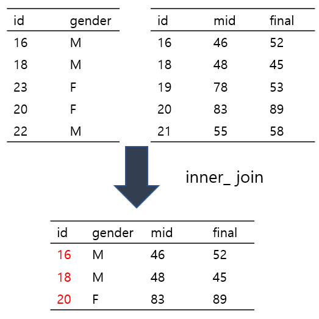
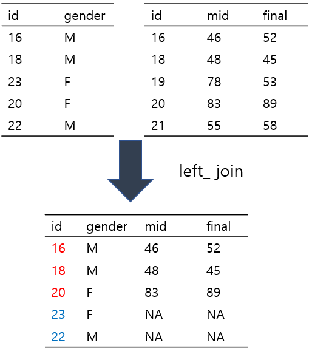
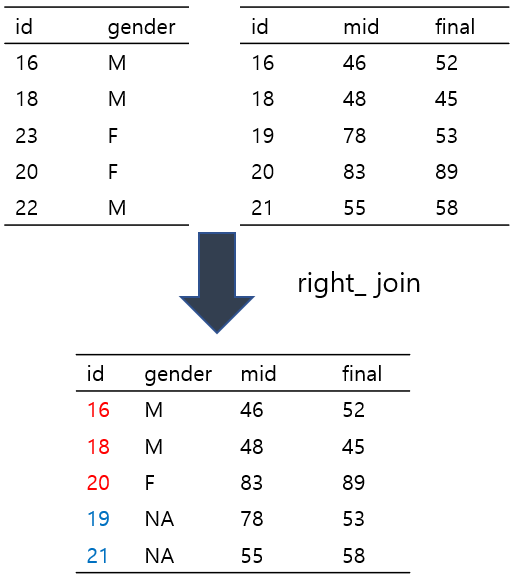

students <- data.frame(id = c(1, 2, 3), name = c("Kim", "Lee", "Park"))
scores <- data.frame(id = c(1, 3, 4), score = c(90, 85, 70))
left_join(students, scores, by = "id")iris 데이터셋은 R에서 기본으로 제공되는 대표적인 내장 데이터셋 중 하나로,
붓꽃(iris) 3종류에 대한 꽃받침과 꽃잎의 길이/너비 정보를 담고 있다.
총 150개의 관측값(행)과 5개의 변수(열)로 구성되어 있으며, 각 변수는 다음과 같은 정보를 담고 있다:
| 변수 이름 | 설명 |
|---|---|
Sepal.Length |
꽃받침 길이 (cm) |
Sepal.Width |
꽃받침 너비 (cm) |
Petal.Length |
꽃잎 길이 (cm) |
Petal.Width |
꽃잎 너비 (cm) |
Species |
붓꽃의 품종 (setosa, versicolor, virginica) |
앞서 배운 head(), dim(), str() 등의 함수를 이용하면
iris 데이터셋의 기본 구조와 내용을 빠르게 파악할 수 있다.
head(iris) # 상위 6행 출력 (미리 보기)
dim(iris) # 행과 열의 개수 확인 150 5
str(iris) # 변수의 타입과 예시 값 확인2.5.1 rbind()와 cbind() — 행/열 결합 함수
R에서는 데이터프레임이나 행렬을 행(row) 또는 열(column) 방향으로
결합할 때 rbind()와 cbind() 함수를 사용한다.
이를 iris 데이터셋을 통해 직접 살펴보자.
rbind() — 행 결합 (아래로 붙이기)
rbind()는 두 개 이상의 데이터프레임을 행 방향으로 결합한다.
즉, 관측값(행)을 추가하는 경우에 사용한다.
new_row <- data.frame(
Sepal.Length = 5.1,
Sepal.Width = 3.5,
Petal.Length = 1.4,
Petal.Width = 0.2,
Species = "setosa"
)
iris_extended <- rbind(iris, new_row)
nrow(iris_extended) # 151
tail(iris_extended)- 열 이름과 순서가 기존 데이터프레임과 동일해야 결합 가능
cbind() — 열 결합 (옆으로 붙이기)
cbind()는 두 개 이상의 벡터 또는 데이터프레임을 열 방향으로 결합한다. 즉, 새로운 변수(열)을 추가할 때 사용한다.
New_Var <- sample(1:100, 150) # 임의의 수치형 벡터
iris_with_new <- cbind(iris, New_Var)
head(iris_with_new)2.6 데이터프레임 서브세팅
데이터 분석에서 서브세팅(subsetting)은 원하는 조건에 맞는 일부 데이터만 추출하는 중요한 작업이다. 이번에는 iris 데이터셋을 중심으로 다양한 서브세팅 방법들을 살펴보자.
2.6.1 조건에 맞는 행 추출
Species가 "setosa"인 행만 추출하고 싶다면:
iris[iris$Species == "setosa", ]비슷하게, Sepal.Length가 5보다 큰 행만 추출하려면:
iris[iris$Sepal.Length > 5, ]2.6.2 subset() 함수 사용하기
subset() 함수는 조건에 맞는 행 추출을 보다 간결하게 표현할 수 있도록 도와준다.
기본형식: subset(x, subset, select)
x: 데이터프레임subset: 행 필터 조건select: 선택할 열 이름
subset(iris, Species == "setosa")
subset(iris, Sepal.Length > 5)다음과 같이 복수 조건을 사용할 수 있다. | 기호는 R에서 or 조건을, & 기호는 and 조건을 의미한다.
# Species가 setosa 또는 virginica인 경우
subset(iris, Species == "setosa" | Species == "virginica")
# Species가 setosa이면서 Sepal.Length가 5보다 큰 경우
subset(iris, Species == "setosa" & Sepal.Length > 5)위의 코드를 subset() 함수 없이 작성한다면:
iris[iris$Species == "setosa" | iris$Species == "virginica", "Sepal.Length"]3. dplyr 패키지
dplyr 패키지는 데이터프레임을 쉽고 직관적으로 다룰 수 있도록 도와주는 R의 핵심 패키지로, 열 선택, 행 필터링, 정렬, 요약, 그룹화 등 다양한 데이터 처리 작업을 간편하게 수행할 수 있다.

다음은 dplyr에서 자주 사용되는 주요 함수들이다.
| 함수 | 설명 |
|---|---|
filter() |
조건에 맞는 행만 추출 |
select() |
특정 열만 선택 |
arrange() |
지정한 열을 기준으로 행 정렬 |
mutate() |
새로운 열 추가 또는 기존 열 변형 |
summarise() |
요약 통계 계산 (예: 평균, 합계 등) |
group_by() |
그룹 단위 연산을 위해 그룹화 |
slice() |
행 번호를 기준으로 행 추출 |
이번 교육에서는 ggplot2 패키지에 포함된 diamonds 데이터를 사용한다. diamonds 데이터는 약 54,000개의 다이아몬드에 대한 물리적 특성과 가격 정보를 포함한 데이터셋으로, ggplot2 패키지에 내장되어 있어 데이터 시각화 연습에 자주 사용된다.
| 변수 | 설명 | 자료형 |
|---|---|---|
carat |
다이아몬드 무게 (캐럿) | numeric |
cut |
컷 품질 (Fair, Good, Very Good, Premium, Ideal) | ordered factor |
color |
색 등급 (D~J, D가 가장 우수) | ordered factor |
clarity |
투명도 등급 (I1~IF, IF가 가장 우수) | ordered factor |
depth |
전체 깊이 비율 = z / mean(x, y) | numeric |
table |
테이블 비율 = x축 기준 윗면 폭 비율 | numeric |
price |
가격 (USD) | integer |
x |
길이 (mm) | numeric |
y |
너비 (mm) | numeric |
z |
깊이 (mm) | numeric |
3.1 파이프 연산자
dplyr에서 자주 사용되는 파이프 연산자 (%>%)는 여러 연산을 연결한 문법으로 표현 할 수 있게 해주는 핵심 도구이다.
%>%는 앞에서 수행한 결과를 다음 함수의 첫 번째 인자로 전달하는 연산자로 복잡한 중첩 함수 호출 없이 가독성 좋고 직관적인 코드를 작성하기 위해 사용된다.
기본 사용 형태
data %>% function1() %>% function2() %>% function3()
이는 아래와 동일한 의미이다.
function3(function2(function1(data)))
다음의 예제는 같은 결과를 보여주는 코드이다. 첫 번째는 파이프 연산자를 사용한 방식이고, 두 번째는 파이프 없이 중첩 함수 호출로 작성한 방식이다.
x <- 1:10
sum(x)
x %>%
sum()%>%는 ctrl + shift + M 단축키로 쉽게 불러올 수 있다.
3.2 select()
select() 함수는 데이터프레임에서 원하는 열(column)만 선택할 수 있도록 해주는 함수이다,
주요 사용 예시
diamonds 데이터를 이용하여 carat과 price 열을 선택해보자.
select(diamonds, carat, price)이번에는 파이프 연산자 %>%를 이용해 같은 작업을 수행해보자.
diamonds %>%
select(carat, price)c() 함수를 이용해서 열을 선택할 수도 있다.
diamonds %>%
select(c(carat, price))열의 위치를 인덱스하여 select() 함수를 이용할 수도 있다.
diamonds %>%
select(1, 7)c로 시작하는 열만 선택하고자 할 때는 starts_with() 함수를 사용한다. 이 경우 carat, cut, color, clarity 열이 선택된다.
diamonds %>%
select(starts_with("c"))contains() 함수는 열 이름에 특정 문자열이 포함된 모든 열을 선택할 때 사용한다. 예를 들어 "l"이 포함된 열을 선택하면 color, clarity, table이 선택된다.
diamonds %>%
select(contains("l"))-는 특정 열을 제외할 때 사용하는 연산자이다. 예를 들어 -c(carat, price)를 사용하면 carat과 price를 제외한 나머지 열이 선택된다.
diamonds %>%
select(-carat, -price)3.3 filter()
filter() 함수는 조건에 맞는 행(row)만 추출할 때 사용하는 함수이다.
즉, 데이터프레임에서 원하는 조건을 만족하는 행만 선택하고 나머지는 제거된다.
자주 사용하는 논리 연산자:
==: 같다
!=: 같지 않다
>: 초과
<: 미만
>=: 이상
<=: 이하
&: 그리고 (AND)
|: 또는 (OR)
!: 부정 (NOT)
주요 사용 예시
diamonds 데이터에서 cut이 "Ideal"인 행만 추출하고 싶은 경우, filter() 함수를 다음과 같이 사용한다:
diamonds %>%
filter(cut == "Ideal")%in%은 여러 값을 동시에 조건으로 지정하고 싶을 때 사용하는 연산자이다.
특히 filter() 함수와 함께 쓰면, 여러 값 중 하나라도 일치하는 행을 선택할 수 있다.
diamonds %>%
filter(cut %in% c("Ideal", "Good"))다음과 같은 논리 연산자를 이용해서도 조건에 따라 데이터를 필터링할 수 있다.
예를 들어, price가 1000을 초과하는 행만 추출하고 싶다면 다음과 같이 작성한다:
diamonds %>%
filter(price >= 1000)price가 1000이 아닌 모든 행을 추출하고자 한다면.
diamonds %>%
filter(price != 1000)carat이 2보다 크고 price가 14000보다 작은 행을 추출하고자 한다면
diamonds %>%
filter(carat > 3 & price < 14000)carat이 1보다 작거나 5보다 큰 행만 추출하고자 한다면
diamonds %>%
filter(carat < 1 | carat > 5)3.4 slice()
slice() 함수는 filter()와는 달리 조건이 아닌 행 번호(index 또는 위치)를 기준으로 행을 선택할 때 사용하는 함수이다. 즉, 데이터프레임에서 특정 위치에 있는 행만 선택하고 나머지는 제거된다.
diamonds %>%
slice(1:5)또는 c() 형태로도 행을 선택할 수 있다.
diamonds %>%
slice(c(1:5, 8, 15:20))1행을 제외한 모든 행을 선택하고자 하는경우는 다음과 같이 한다.
diamonds %>%
slice(-1)3.5 mutate()
mutate() 함수는 기존 열을 변형하거나 새로운 열을 추가할 때 사용하는 함수이다. 데이터프레임에 새로운 변수(column)를 생성하거나 기존 변수의 값을 바꿀 수 있는 함수이다.
예를 들어, price/carat의 비율을 나타내는 새로운 열을 만들어보자:
diamonds %>%
mutate(price/carat)하지만 이 코드만으로는 열의 이름이 지정되지 않았고, 열이 너무 많아서 출력 시 새로 만든 열이 보이지 않을 수 있다. 이럴 때는 앞에서 배운 select() 함수를 사용해 관심 있는 열만 선택한 뒤, mutate()로 새 열을 추가하면 더 명확하게 확인할 수 있다.
diamonds %>%
select(carat, price) %>%
mutate(price/carat)이제 새로 만든 열에 Ratio라는 이름을 부여해보자:
diamonds %>%
select(carat, price) %>%
mutate(Ratio = price/carat)여기서 Ratio 값을 이용해 새로운 열을 연쇄적으로 만들 수도 있다. 예를 들어, Ratio에 2를 곱한 값을 Double이라는 이름으로 추가하면 다음과 같다:
diamonds %>%
select(carat, price) %>%
mutate(Ratio = price/carat,
Double = Ratio*2)이처럼 mutate()는 다른 열을 조합하거나 가공하여 여러 새로운 변수들을 동시에 생성하는 데 매우 유용하다.
여기서 중요한 점은, %>%, mutate() 등과 같은 함수들을 사용해 데이터를 처리하더라도 원본 데이터는 실제로 변경되지 않는다는 것이다. diamonds 데이터프레임 자체는 그대로 유지되고, 변형된 결과는 일시적으로 출력될 뿐이다.
따라서, 우리가 만든 새로운 데이터를 보존하여 나중에 다시 사용하고 싶다면, 결과를 새로운 객체에 할당해주어야 한다.
dia_ratio <- diamonds %>%
select(carat, price) %>%
mutate(Ratio = price/carat,
Double = Ratio*2)3.6 summarize()
summarize() 함수(또는 summarise())는 데이터의 요약 통계량을 계산할 때 사용하는 함수이다. 데이터프레임 전체 또는 그룹별로 평균, 합계, 개수, 최대값, 최소값 등을 계산할 때 사용된다.
예를 들어, diamonds 데이터프레임에서 price의 평균을 계산하려면 다음과 같이 작성할 수 있다:
diamonds %>%
summarize(mean(price))summarize() 함수에서는 평균뿐 아니라 다양한 통계량 계산도 간단히 수행할 수 있다:
diamonds %>%
summarize(AvgPrice = mean(price),
MedianPrice = median(price),
Avgcarat = mean(carat))summarize()는 단독으로도 사용할 수 있지만, group_by()와 함께 사용하면 그룹별 통계량을 계산하는 데 특히 유용하다.
3.7 group_by()
group_by() 함수는 데이터를 특정 변수(또는 변수들)를 기준으로 그룹화할 때 사용하는 함수이다. 이 함수는 보통 summarize()와 함께 사용되어, 각 그룹별로 요약 통계량을 계산할 수 있게 한다.
예를 들어, cut의 종류별로 price의 평균을 계산하려면 다음과 같이 작성한다:
diamonds %>%
group_by(cut) %>%
summarize(AvgPrice = mean(price))이번에는 cut과 color 두 가지 기준으로 그룹화한 후, price의 평균과 carat의 합계를 함께 계산해보자:
diamonds %>%
group_by(cut, color) %>%
summarize(AvgPrice = mean(price), SumCarat = sum(carat))조금 더 나아가서, 이 중 cut == "Fair"인 그룹만 추출하고 싶다면 다음과 같이 작성한다:
diamonds %>%
group_by(cut, color) %>%
summarize(AvgPrice = mean(price), SumCarat = sum(carat)) %>%
filter(cut == "Fair")3.8 arrange()
arrange() 함수는 데이터를 특정 변수(열)의 값을 기준으로 정렬할 때 사용하는 함수이다. 기본적으로 오름차순 정렬을 수행하며, desc() 함수를 함께 사용하면 내림차순 정렬도 가능하다.
diamonds %>%
group_by(cut) %>%
summarize(AvgPrice = mean(price), SumCarat = sum(carat)) %>%
arrange(AvgPrice)diamonds %>%
group_by(cut) %>%
summarize(AvgPrice = mean(price), SumCarat = sum(carat)) %>%
desc(AvgPrice)지금까지 배운 함수를 이용하여 다음과 같은 분석을 수행해보자.
- cut이
"Ideal"또는"Premium"인 다이아몬드 중에서 carat,price,cut,color변수만 선택하고price대비carat비율(carat_per_dollar)을 계산한 후cut과color별로 그룹화하여carat_per_dollar의 평균과 최대값을 구하고- 평균이 높은 순서대로 정렬한다
4. ggplot2의 이해와 활용
왜 ggplot2를 쓰는가
R의 기본 그래픽(plot())만으로도 시각화는 가능하다. 다만 그림이 조금만 복잡해져도 수정/확장이 불편해진다.
예를 들어 색, 범례, 조건별 비교(facet), 통계적 요약(추세선) 등을 추가하려면 옵션을 하나씩 수동으로 만져야 한다.
반면 ggplot2는 그래픽 문법(grammar of graphics)에 기반해, 그림을 레이어(layer)로 쌓아 올리는 방식으로 작성한다.
그래서 다음과 같은 장점이 생긴다.
- 코드 구조가 일정해 재사용/수정/확장이 쉽다.
- 변수와 시각적 속성(aes)을 연결해 일관된 표현이 가능하다.
facet,theme,scale같은 기능으로 표현을 체계적으로 확장한다.dplyr로 집계한 결과를 그대로 이어서 시각화하기 좋다.
기본 plot vs ggplot2
# base plot
plot(mpg$displ, mpg$hwy,
main = "base plot: displ vs hwy",
xlab = "displ", ylab = "hwy",
pch = 20, col = "blue")
# ggplot2
ggplot(mpg, aes(x = displ, y = hwy)) +
geom_point() +
labs(title = "ggplot2: displ vs hwy")
강의 목표
이번 실습에서는 ggplot2의 기본 문법을 mpg 데이터로 익힌다.
ggplot(data) + aes(...) + geom_*()기본 구조를 이해한다- 산점도/막대그래프/박스플롯의 핵심 문법을 실습한다
facet_*,theme,scale_*로 표현을 확장한다dplyr집계 후 시각화까지 연결한다
4.0 패키지 로드와 데이터 확인
library(ggplot2)
library(dplyr)
Attaching package: 'dplyr'The following objects are masked from 'package:stats':
filter, lagThe following objects are masked from 'package:base':
intersect, setdiff, setequal, unionhead(mpg)# A tibble: 6 × 11
manufacturer model displ year cyl trans drv cty hwy fl class
<chr> <chr> <dbl> <int> <int> <chr> <chr> <int> <int> <chr> <chr>
1 audi a4 1.8 1999 4 auto(l5) f 18 29 p compa…
2 audi a4 1.8 1999 4 manual(m5) f 21 29 p compa…
3 audi a4 2 2008 4 manual(m6) f 20 31 p compa…
4 audi a4 2 2008 4 auto(av) f 21 30 p compa…
5 audi a4 2.8 1999 6 auto(l5) f 16 26 p compa…
6 audi a4 2.8 1999 6 manual(m5) f 18 26 p compa…str(mpg)tibble [234 × 11] (S3: tbl_df/tbl/data.frame)
$ manufacturer: chr [1:234] "audi" "audi" "audi" "audi" ...
$ model : chr [1:234] "a4" "a4" "a4" "a4" ...
$ displ : num [1:234] 1.8 1.8 2 2 2.8 2.8 3.1 1.8 1.8 2 ...
$ year : int [1:234] 1999 1999 2008 2008 1999 1999 2008 1999 1999 2008 ...
$ cyl : int [1:234] 4 4 4 4 6 6 6 4 4 4 ...
$ trans : chr [1:234] "auto(l5)" "manual(m5)" "manual(m6)" "auto(av)" ...
$ drv : chr [1:234] "f" "f" "f" "f" ...
$ cty : int [1:234] 18 21 20 21 16 18 18 18 16 20 ...
$ hwy : int [1:234] 29 29 31 30 26 26 27 26 25 28 ...
$ fl : chr [1:234] "p" "p" "p" "p" ...
$ class : chr [1:234] "compact" "compact" "compact" "compact" ...mpg 데이터는 자동차 연비 관련 데이터다.
displ: 엔진 배기량hwy: 고속도로 연비cty: 도심 연비class: 차종drv: 구동방식
4.1 ggplot2의 기본 구조
ggplot2는 보통 아래 형태로 작성한다.
ggplot(data = ...): 사용할 데이터aes(...): 매핑(미적 요소: x, y, color, size 등)geom_*(): 기하 객체(점/선/막대/상자그림 등)
4.1.1 가장 기본: 산점도
ggplot(mpg, aes(x = displ, y = hwy)) +
geom_point()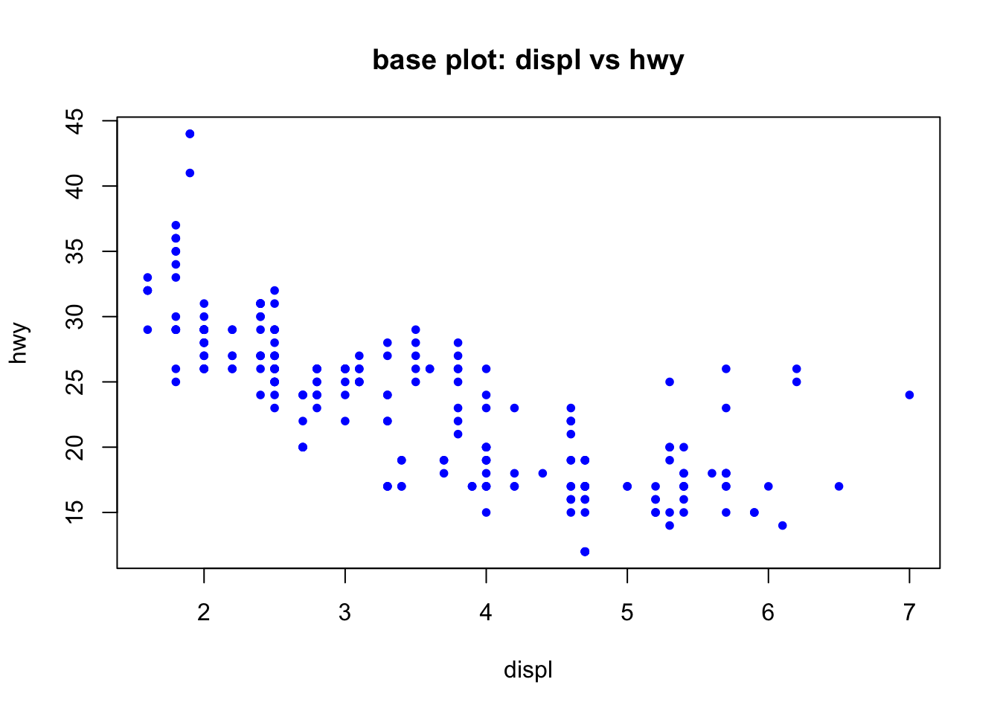
4.2. 미적요소(aes) 확장: 색/투명도
4.2.1 범주형 변수를 색으로
ggplot(mpg, aes(x = displ, y = hwy, color = class)) +
geom_point()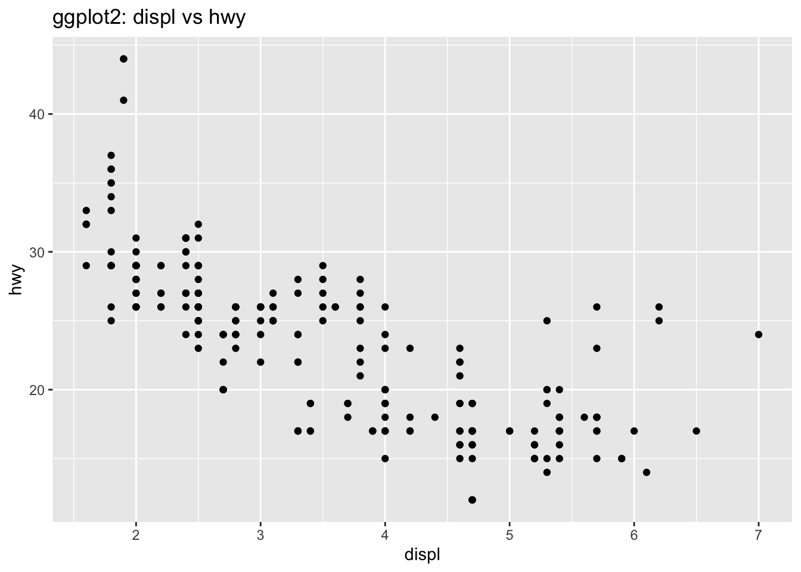
4.2.2 점 겹침 완화: 투명도(alpha)
ggplot(mpg, aes(x = displ, y = hwy)) +
geom_point(alpha = 0.5)
alpha는 0~1 사이 값이며, 값이 작을수록 더 투명해진다.
4.3. 레이어 추가: 추세선(geom_smooth)
4.3.1 전체 추세선(비선형 스무딩)
ggplot(mpg, aes(x = displ, y = hwy)) +
geom_point(alpha = 0.6) +
geom_smooth(se = TRUE)`geom_smooth()` using method = 'loess' and formula = 'y ~ x'
4.3.2 선형회귀 추세선(method = “lm”)
ggplot(mpg, aes(x = displ, y = hwy)) +
geom_point(alpha = 0.6) +
geom_smooth(method = "lm", se = TRUE)`geom_smooth()` using formula = 'y ~ x'
4.4. facet으로 그룹 비교
4.4.1 차종별로 나누어 보기
ggplot(mpg, aes(x = displ, y = hwy)) +
geom_point(alpha = 0.6) +
facet_wrap(~ class)
4.4.2 구동방식별로 나누어 보기
ggplot(mpg, aes(x = displ, y = hwy)) +
geom_point(alpha = 0.6) +
facet_wrap(~ drv)
4.5. 범주형 그래프: 막대그래프 / 박스플롯
4.5.1 막대그래프(빈도)
geom_bar()는 기본적으로 개수(count)를 센다.
ggplot(mpg, aes(x = class)) +
geom_bar()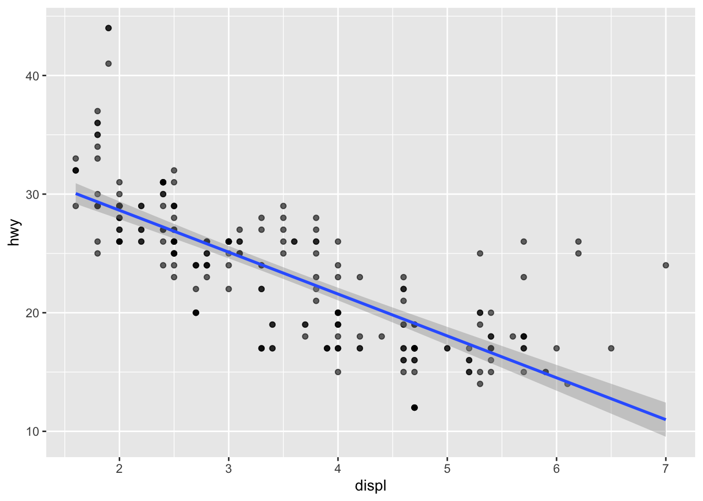
레이블이 겹치면 회전해서 가독성을 높인다.
ggplot(mpg, aes(x = class)) +
geom_bar() +
theme(axis.text.x = element_text(angle = 45, hjust = 1))
4.5.2 박스플롯: 차종별 고속도로 연비 분포
ggplot(mpg, aes(x = class, y = hwy)) +
geom_boxplot() +
theme(axis.text.x = element_text(angle = 45, hjust = 1))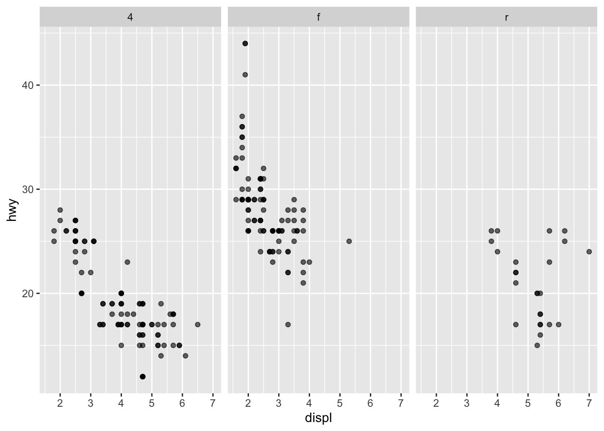
점도 같이 찍으면 분포가 더 직관적으로 보인다.
ggplot(mpg, aes(x = class, y = hwy)) +
geom_boxplot(outlier.alpha = 0.2) +
geom_jitter(width = 0.15, alpha = 0.4) +
theme(axis.text.x = element_text(angle = 45, hjust = 1))
4.6. 집계 후 시각화: dplyr + ggplot2
4.6.1 차종별 평균 hwy 계산
mpg_sum <- mpg %>%
group_by(class) %>%
summarise(
mean_hwy = mean(hwy),
n = n(),
.groups = "drop"
)
mpg_sum# A tibble: 7 × 3
class mean_hwy n
<chr> <dbl> <int>
1 2seater 24.8 5
2 compact 28.3 47
3 midsize 27.3 41
4 minivan 22.4 11
5 pickup 16.9 33
6 subcompact 28.1 35
7 suv 18.1 624.6.2 평균 연비 막대그래프(geom_col)
geom_col()은 y값을 그대로 사용한다(집계된 데이터에 적합하다).
ggplot(mpg_sum, aes(x = class, y = mean_hwy)) +
geom_col() +
theme(axis.text.x = element_text(angle = 45, hjust = 1))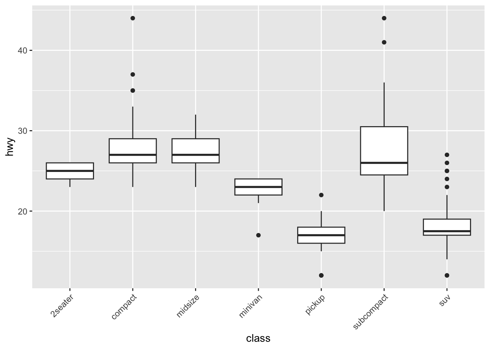
4.6.3 값 기준 정렬(reorder) + 가독성(축 뒤집기)
ggplot(mpg_sum, aes(x = reorder(class, mean_hwy), y = mean_hwy)) +
geom_col() +
coord_flip() +
labs(
x = "class",
y = "평균 고속도로 연비(mean hwy)",
title = "차종별 평균 고속도로 연비(정렬)"
)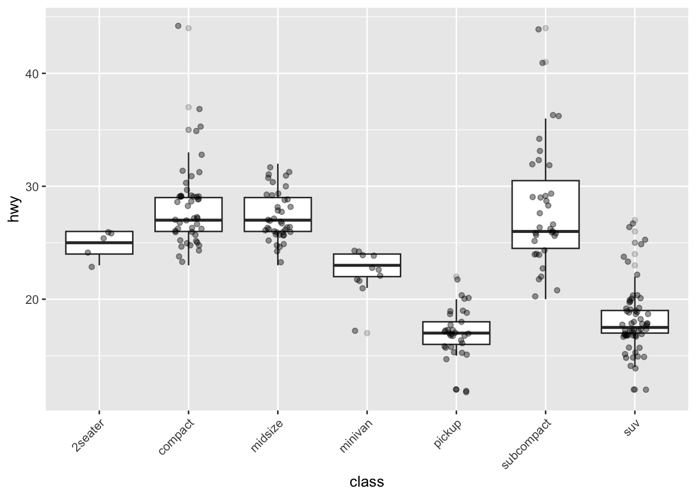
4.7. 라벨/제목/범례 설정: labs
ggplot(mpg, aes(x = displ, y = hwy, color = drv)) +
geom_point(alpha = 0.7) +
labs(
title = "배기량과 고속도로 연비의 관계",
subtitle = "구동방식(drv)별로 색상 구분",
x = "배기량(displ)",
y = "고속도로 연비(hwy)",
color = "구동방식"
)
4.8. 테마(theme): 전체 스타일 바꾸기
대표적으로 많이 쓰는 테마는 다음과 같다.
theme_minimal()theme_bw()theme_classic()
ggplot(mpg, aes(x = displ, y = hwy, color = class)) +
geom_point(alpha = 0.7) +
theme_minimal()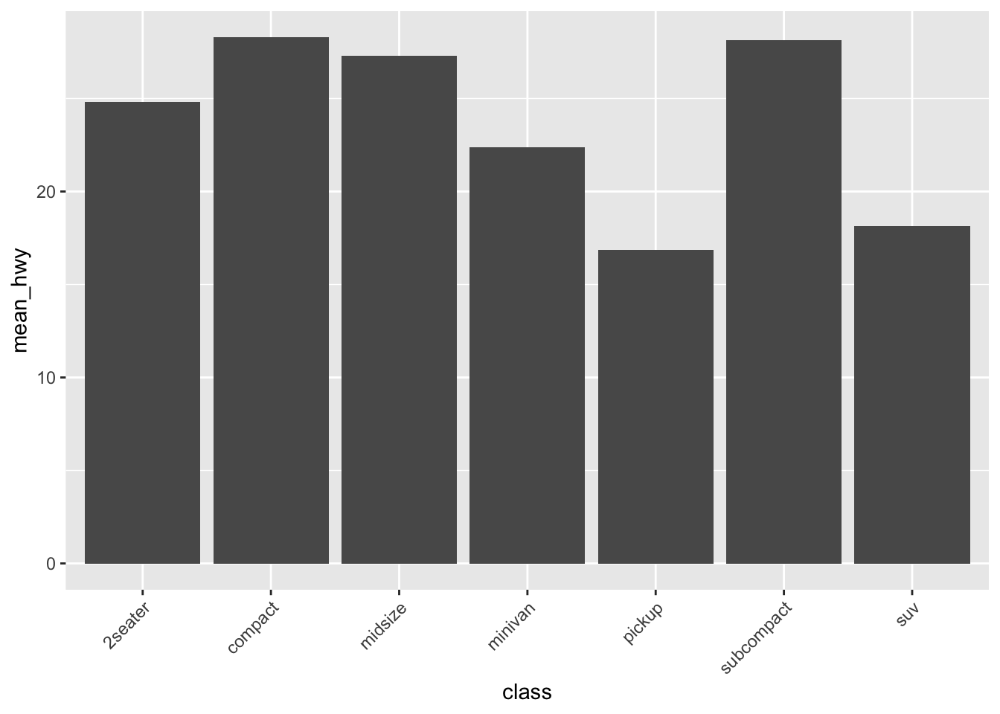
4.9. 스케일(scale): 축 변환/범위 조정
4.9.1 y축 범위 제한(주의: 범위 밖 데이터는 잘린다)
ggplot(mpg, aes(x = displ, y = hwy)) +
geom_point(alpha = 0.7) +
scale_y_continuous(limits = c(10, 40))Warning: Removed 3 rows containing missing values or values outside the scale range
(`geom_point()`).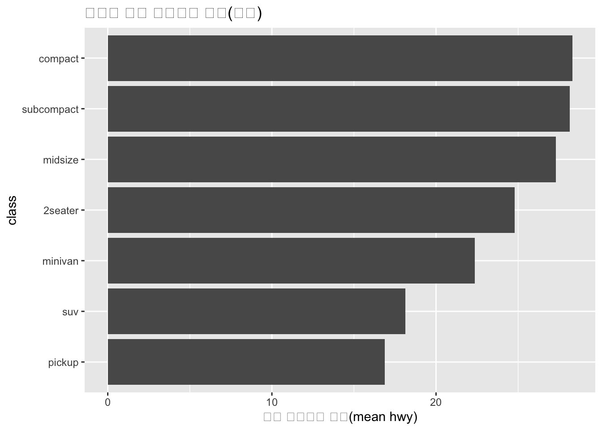
4.9.2 로그 스케일(분포가 한쪽으로 치우친 경우)
ggplot(mpg, aes(x = displ, y = hwy)) +
geom_point(alpha = 0.7) +
scale_x_log10()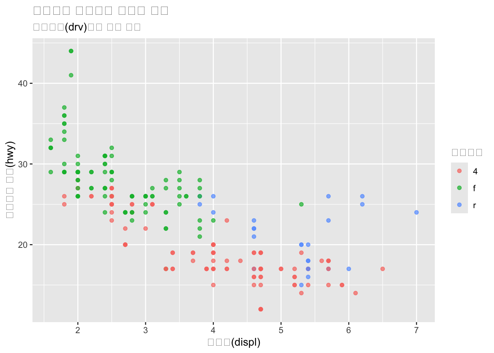
4.10. 저장하기: ggsave
p <- ggplot(mpg, aes(x = displ, y = hwy, color = drv)) +
geom_point(alpha = 0.7) +
theme_minimal()
p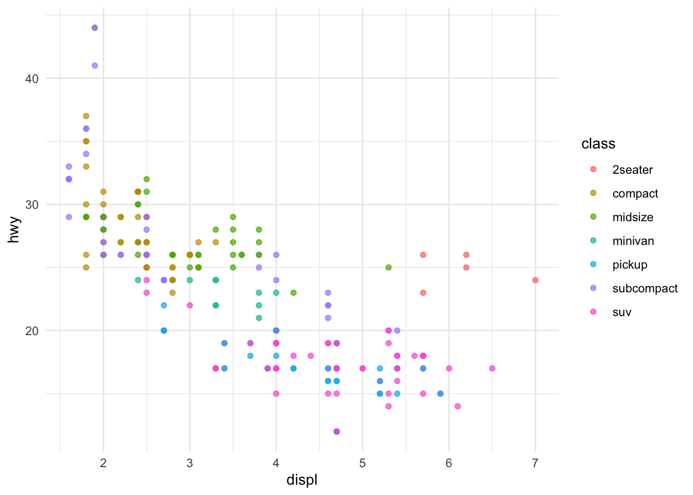
ggsave("mpg_scatter.png", plot = p, width = 7, height = 5, dpi = 300)4.11. 연습문제
연습 1
cty(도심연비)와 hwy(고속도로연비)의 관계를 산점도로 그리고, class로 색을 구분해보자.
힌트: - aes(x = cty, y = hwy, color = class) - geom_point()
연습 2
class별 hwy의 분포를 박스플롯으로 그린 뒤, x축 레이블 겹침을 해결해보자.
힌트: - theme(axis.text.x = element_text(angle = 45, hjust = 1))
연습 3
drv별 평균 hwy를 계산한 뒤 막대그래프로 나타내보자.
힌트: - group_by(drv) %>% summarise(mean_hwy = mean(hwy)) - geom_col()
요약
ggplot(data) + aes(...) + geom_*()는 기본 뼈대다.+로 레이어를 쌓아 의미를 확장한다.- 범주 비교는
facet, 스타일은theme, 축/표현은scale로 다룬다. - 실무에서는
dplyr로 집계 후geom_col()조합을 자주 쓴다.
연습 1: cty vs hwy 산점도 + class로 색 구분 ggplot(mpg, aes(x = cty, y = hwy, color = class)) + geom_point(alpha = 0.7) + labs( title = “cty vs hwy (class로 색 구분)”, x = “cty (도심 연비)”, y = “hwy (고속도로 연비)”, color = “class” )
연습 2: class별 hwy 박스플롯 + x축 레이블 겹침 해결 ggplot(mpg, aes(x = class, y = hwy)) + geom_boxplot(outlier.alpha = 0.3) + theme(axis.text.x = element_text(angle = 45, hjust = 1)) + labs( title = “class별 hwy 분포(박스플롯)”, x = “class”, y = “hwy” )
연습 3: drv별 평균 hwy 계산 후 막대그래프(geom_col) mpg_drv <- mpg %>% group_by(drv) %>% summarise(mean_hwy = mean(hwy), .groups = “drop”)
ggplot(mpg_drv, aes(x = drv, y = mean_hwy)) + geom_col() + labs( title = “drv별 평균 hwy”, x = “drv”, y = “mean(hwy)” )